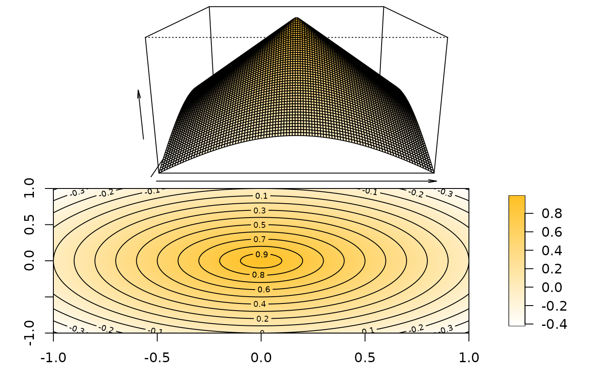

Plot/estimate surface
ksmooth2(
x,
data,
h = NULL,
xlab = NULL,
ylab = NULL,
zlab = "",
gridsize = rep(51L, 2),
...
)ksmooth2(rmvn0(1e4,sigma=diag(2)*.5+.5),c(-3.5,3.5),h=1,
rgl=FALSE,theta=30)
if (interactive()) {
ksmooth2(rmvn0(1e4,sigma=diag(2)*.5+.5),c(-3.5,3.5),h=1)
ksmooth2(function(x,y) x^2+y^2, c(-20,20))
ksmooth2(function(x,y) x^2+y^2, xlim=c(-5,5), ylim=c(0,10))
f <- function(x,y) 1-sqrt(x^2+y^2)
surface(f,xlim=c(-1,1),alpha=0.9,aspect=c(1,1,0.75))
surface(f,xlim=c(-1,1),clut=heat.colors(128))
##play3d(spin3d(axis=c(0,0,1), rpm=8), duration=5)
}
if (interactive()) {
surface(function(x) dmvn0(x,sigma=diag(2)),c(-3,3),lit=FALSE,smooth=FALSE,box=FALSE,alpha=0.8)
surface(function(x) dmvn0(x,sigma=diag(2)),c(-3,3),box=FALSE,specular="black")##'
}
if (!inherits(try(find.package("fields"),silent=TRUE),"try-error")) {
f <- function(x,y) 1-sqrt(x^2+y^2)
ksmooth2(f,c(-1,1),rgl=FALSE,image=fields::image.plot)
}
